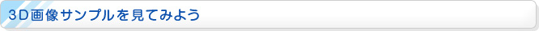

まずはHOMEメニュー画面右上の『インターネットブラウザー』をタッチします。
試しに、このN.O.Mのページをニンテンドー3DSで表示してみましょう。メニュー画面の「検索ワード入力」から「nom」と入力して検索しましょう。または「URL」のボタンから直接URLを入力してもOKです。
N.O.Mのページを表示できたら、拡大／縮小したり、上下左右にスクロールしたりして、自分の見やすいように操作しましょう。
それではこの画像を見てみてください。こちらは普通の画像です。画像をタッチしつづけてはなすと、上画面全体に拡大表示することができます。
一方、こちらは3D画像(MPO形式ファイル)です。先ほどと同様に、タッチペンで画像をしばらくタッチしつづけてはなします。すると、上画面全体で拡大表示され、3Dで見えるはずです（※）。
※
3Dボリュームが「OFF」になっていると3Dに見えないので注意してください。
下画面に表示される「画像を保存」をタッチすると、画像をSDカードに保存できます。保存した画像は『ニンテンドー3DSカメラ』から、いつでも見ることが可能です。
写真を投稿したら、『インターネットブラウザー』で確認してみましょう。3D写真をアップロードした場合には、3Dで見ることも可能です（※）。もちろん、再度ダウンロードすることもできます。
※
ウェブサービスによっては、3D写真の画像データをそのサイト用に自動で加工していることがあります。その場合は3Dで見ることはできません。
また、サーバー側が3D画像に対応している必要があります。
これまでニンテンドー3DSで撮影した写真をインターネット上にアップロードするには、SDカードに保存して、パソコンに転送して、パソコンからアップロードするという手順が必要でした。『インターネットブラウザー』なら、それよりずっと手軽で簡単です。
また、パソコンがない外出先でも、ニンテンドー3DSとインターネット接続環境さえあれば、写真のアップロードが可能になりました。お近くの「3DSステーション」などでも、ぜひ試してみてください。